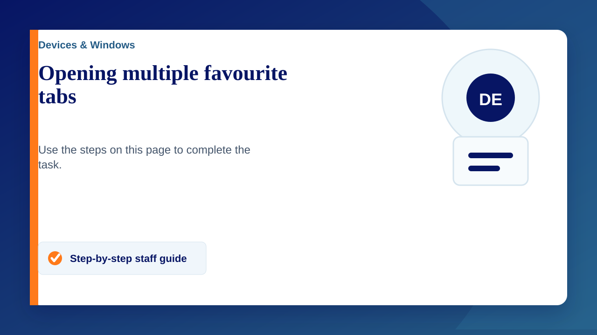

It can be handy to have all the webpages you use on a daily basis open at the same time. Following these quick steps can help reduce time spent opening webpages one at a time.
Opening multiple pages at once
- Open the website(s) you visit on a daily basis
- On the right side of the address bar click the star icon
- Click the folder drop down and press 'choose another folder'
- Right click on 'bookmarks bar' and press 'new folder'
- Name the folder as you wish
- Add other websites to this folder by repeating steps 1 & 2 and then selecting your new folder from the folder dropdown menu
- On your bookmarks bar, right click the folder and press 'open all'
Note: If you do not see the bookmarks bar under your address bar then press 'crtl + shift + B'